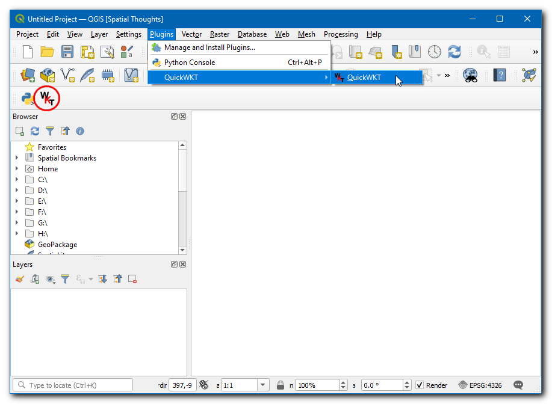

Ujaval Gandhi
Ujaval GandhiKorišćenje dodataka (QGIS3)¶
Dodaci u QGIS-u dodaju korisne funkcije softveru. Dodatke pišu QGIS programeri i drugi nezavisni programeri koji žele da prošire osnovnu funkcionalnost softvera. Ovi dodaci se zatim otpremaju u QGIS repozitorijum dodataka, pregledaju ih članovi zajednice, a zatim se stavljaju na raspolaganje svim QGIS korisnicima.
Pregled zadatka¶
U ovom tutorijalu ćete naučiti kako da omogućite osnovne dodatke, kao i da preuzmete i instalirate dodatke trećih strana. Takođe ćete naučiti kako da pronađete i pokrenete dodatke nakon što budu instalirani.
Procedura¶
Osnovni dodaci¶
Osnovni dodaci su već deo standardne QGIS instalacije. Da biste ih koristili, samo ih treba omogućiti.
Otvorite QGIS. Kliknite na da biste otvorili Dodaci dijalog.

Čak i ako vam je ovo prvi put da koristite QGIS, videćete mnogo dodataka navedenih pod karticom Instalirano. To je zato što su to Osnovni dodaci i instalirani su tokom instalacije QGIS-a.

Omogućimo jedan od dodataka. Označite polje za potvrdu pored Topology Checker Plugin. Ovo će omogućiti dodatak i moći ćete da ga koristite. Jedna stvar koju treba napomenuti je da dodaci mogu da ubacuju stavke menija na različite lokacije i da kreiraju nove panele i trake sa alatkama. Ponekad je teško znati kako pronaći novoomogućene alate. Jedan trag je da pogledate opis dodatka. Ovde opis kaže Kategorija: Vektor. To ukazuje da će se dodatak naći u meniju Vektor nakon što bude omogućen. Takođe, ovi dodaci se ne mogu deinstalirati. Kliknite na Zatvori.

Белешка
Mnogi osnovni dodaci nisu podrazumevano omogućeni. Dodaci se učitavaju pri pokretanju QGIS-a, tako da omogućavanje mnogih dodataka može povećati vreme pokretanja. Onemogućite sve dodatke koji vam nisu potrebni za bolje iskustvo.
Sada kada je Plugin za proveru topologije omogućen, možete otići na da biste koristili funkcionalnost koju je dodatak dodao.

Dodaci trećih strana¶
Dodaci trećih strana su dostupni u QGIS repozitorijumu dodataka i korisnici ih moraju instalirati pre nego što ih koriste. Dodaci trećih strana mogu se grubo kategorizovati u sledeće podgrupe.
GUI dodaci
Obrada dodataka
Eksperimentalni dodaci
Sada ćemo naučiti kako da instaliramo dodatke iz svake od ovih kategorija.
GUI dodaci¶
Ovi dodaci se instaliraju u jedan od Menija ili Traka sa alatkama. Sada ćemo instalirati dodatak pod nazivom QuickWKT koji omogućava korisnicima da kopiraju/lepe WKT geometrijske nizove i vizuelizuju ih.
Otvorite QGIS. Kliknite na da biste otvorili Dodaci dijalog.

Kliknite na karticu Sve. Ovde ćete videti listu navedenih dodataka.

Za ovaj tutorijal, hajde da pronađemo i instaliramo dodatak pod nazivom QuickWKT. Kada počnete da kucate qui u polje search, videćete rezultate pretrage ispod. Kliknite na QuickWKT.

Sada će se prikazati informacije o dodatku, ovaj dodatak je WKT pregledač. Kliknite na
wktu Tags, ovo će preuzeti sve dodatke pod ovom oznakom.
Sada kliknite na Instaliraj dodatak u QGIS Dodaci dijaloškom okviru. Sada će QGIS informativna traka sa porukama prikazati poruku
Dodatak je uspešno instaliran.
Ako ste primetili, u opisu nije bilo pomena o kategoriji dodatka. Zbog toga je teško utvrditi kako pristupiti novoinstaliranom dodatku. Većina dodataka se instalira u meniju Dodaci u QGIS-u. Kliknite na i videćete novoinstalirani dodatak. Dodatak takođe dodaje dugme na traku sa alatkama Dodaci. Takođe možete koristiti to dugme za pristup dodatku.

Obrada dodataka¶
Ovi dodaci će dodati nove algoritme (tj. alate) u Alatke za obradu QGIS-a. Ovo je preferirani način za kreiranje dodataka koji dodaju nove funkcionalnosti prostorne analize. Umesto samostalnog alata, algoritam iz alatke za obradu može se koristiti kao deo kreatora modela ili u režimu grupne obrade za automatizaciju GIS tokova rada. Sada ćemo instalirati dodatak za obradu.
Otvorite QGIS. Kliknite na da biste otvorili Dodaci dijalog.

Kliknite na karticu Sve i potražite ORS alate.

Kliknite na dodatak i kliknite na Instaliraj dodatak u QGIS Dodaci dijaloškom okviru. Nakon uspešne instalacije, QGIS informativna traka sa porukama će prikazati poruku
Dodatak je uspešno instaliran.
Dodatak - Plugin će dodati fasciklu sa alatima u Process Toolbox. Idite na .

Postoji mnogo grupa alata, a oni koji pored sebe imaju QGIS logo nazivaju se Izvorni algoritmi. Primetićete novu fasciklu na dnu pod nazivom ORS alati. Ovo je dodano pomoću dodatka koji smo upravo instalirali i poznato je kao Provajder. QGIS dodaci za obradu mogu da dodaju nove Provajdere - kao što su ORS alati - koji mogu da sadrže jedan ili više novih algoritama za obradu.
Proširite fasciklu alata ORS da biste istražili sve dostupne alate u njoj. Možete dvaput kliknuti na alat da biste ga pokrenuli.

Белешка
Dodaci mogu da dodaju nove alate kao i nove stavke menija. Dodatak ORS Tools takođe dodaje novu stavku menija za konfiguraciju u okviru menija .
Eksperimentalni dodaci¶
Ponekad tražite određeni dodatak, ali ga ne možete pronaći na kartici Sve. To može biti zato što je dodatak označen kao Eksperimentalno. Evo kako da instalirate eksperimentalni dodatak.
Otvorite Dodaci tako što ćete . Kliknite na karticu Podešavanja. Videćete opciju pod nazivom Prikaži i eksperimentalne dodatke. Kliknite na polje za potvrdu pored nje da biste je omogućili.

Sada se vratite na karticu Sve i potražite dodatak ’RasterAttributeTable’.

Kliknite na dodatak, videćete da je označen kao eksperimentalan. Kliknite na Instaliraj eksperimentalni dodatak i zatvorite Dodaci dijaloški prozor.

Белешка
Koristite eksperimentalne dodatke sa oprezom. Eksperimentalni dodatak možda nije dobro testiran ili je u brzom razvoju.
Možete koristiti dodatak tako što ćete otići na .

Istraživanje repozitorijuma QGIS dodataka¶
QGIS ima bogat ekosistem dodataka trećih -3 strana. Zvanični repozitorijum dodataka QGIS sadrži preko 1000 dodataka. Možete pregledati i otkriti nove dodatke koji bi vas mogli zanimati. Sada ćemo istražiti repozitorijum dodataka.
Idite na QGIS repozitorijum dodataka i kliknite na PLUGINS.

Ova stranica prikazuje sve dostupne dodatke. Možete kliknuti na naslove da biste sortirali dodatke po različitim atributima.

Takođe postoje različiti odeljci kao što su Istaknuto, Popularno itd. kako bi se omogućilo otkrivanje zanimljivih dodataka. Kliknite na Novi dodaci, ovo će preuzeti sve najnovije dodatke. Možete izabrati bilo koji dodatak po vašem izboru. Za ovaj tutorijal, izabraćemo RasterAttributeTabel.

Pređite na Verzije, ovde je navedena istorija izdanja i dostupnih verzija. Mnogi dodaci su kompatibilni samo sa određenim verzijama QGIS-a. Minimalna verzija QGIS-a navodi zahteve za verziju QGIS-a za dodatak.

Kada pronađete dodatak, možete otvoriti QGIS i instalirati ga iz Plugin Manager kao što je prikazano u prethodnim odeljcima.
If you want to give feedback or share your experience with this tutorial, please comment below. (requires GitHub account)